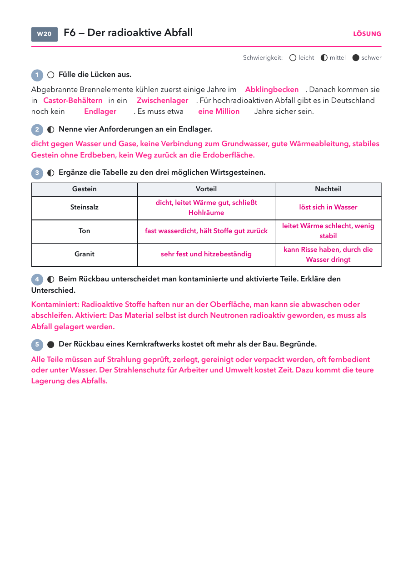

- Arbeitsblatt Der radioaktive Abfall: Seite 1, eins pro Schüler.
- Folien und Lösungen: nicht drucken.
Material
Demo (für dich)
| Material | Anzahl | Hinweis |
|---|---|---|
| nicht nötig | ||
Schülerversuch (pro Gruppe)
| Material | Anzahl | Hinweis |
|---|---|---|
| nicht nötig | ||
Die Stunde
1 · Einstieg Leitfrage 6
2 · Abfall
3 · Üben
4 · Alltag
1
Einstieg Leitfrage 6
Zeitachse bis eine Million Jahre, Vermutungen.
Zeitachse bis eine Million Jahre, Vermutungen.
2
Abfall
Folie und Labor.
Folie und Labor.
3
Üben
Arbeitsblatt.
Arbeitsblatt.
4
Alltag
Abfall in Deutschland.
Abfall in Deutschland.
Folie 1
Beobachte
Wer entscheidet heute, was in einer Million Jahren sicher sein muss?
Folie 2
Leitfrage 6
Nutzen und Risiko: Wie entscheiden wir?

Was vermutest du? Wir sammeln eure Vermutungen.
Folie 3
18. Der radioaktive Abfall
Abgebrannte Brennstäbe kühlen jahrelang im Abklingbecken, danach im
Zwischenlager. Ein Endlager gibt es in Deutschland bisher nicht,
gesucht wird ein Ort, der eine Million Jahre sicher bleibt.
Folie 4 · Schülerblatt mit Lösung
📄 Arbeitsblatt austeilen

Folie 5
Radioaktiver Abfall in Deutschland
| Ort | was dort ist | Stand |
|---|---|---|
| Zwischenlager, z. B. Neckarwestheim | Castoren in Hallen oder Tunneln | bis ein Endlager fertig ist |
| Schacht Konrad, Salzgitter | Endlager für schwach und mittel radioaktiven Abfall | Fertigstellung geplant bis 2029 |
| Asse, Niedersachsen | altes Salzbergwerk | Wasser dringt ein, der Abfall soll zurückgeholt werden |
| Endlager für hochradioaktiven Abfall | Standort wird gesucht | Gorleben ist seit 2020 aus dem Rennen |
Frage: Warum ist die Suche nach einem Endlager so schwierig?
Einstieg Leitfrage 6
- Eine Million Jahre ist ein Zeitraum ohne Vergleich. Die Pyramiden sind etwa 4500 Jahre alt, die Neandertaler starben vor rund 40 000 Jahren aus.
Abfall und Endlager
- Schwach und mittel radioaktiver Abfall ist mengenmäßig der größte Teil, hochradioaktiver Abfall (abgebrannte Brennelemente, Glaskokillen) enthält fast die gesamte Aktivität.
- Schacht Konrad: laut Betreiber BGE soll die Anlage bis Ende 2029 fertig sein, Einlagerung Anfang der 2030er-Jahre.
- Standortsuche nach dem Gesetz von 2017: Entscheidung ursprünglich bis 2031 geplant. Die BGE rechnet inzwischen mit deutlich später. Das Endlager muss 500 Jahre lang Bergung ermöglichen und eine Million Jahre sicher sein.
- Mögliche Wirtsgesteine: Steinsalz, Ton, Kristallin (Granit). Finnland baut mit Onkalo das erste Endlager der Welt im Granit.
Rückbau
- Beim Rückbau ist der größte Teil des Materials nicht radioaktiv und wird wiederverwertet. Kontaminierte Teile werden gereinigt, aktivierte Teile sind Abfall.
- Der Rückbau eines Kraftwerks dauert 15 bis 20 Jahre und kostet rund eine Milliarde Euro.
Kernenergielabor
Labor öffnenWie lange strahlt der Abfall? Cäsium, Plutonium und Iod auf logarithmischer Zeitachse.
Arbeitsblatt Der radioaktive Abfall
PDF öffnenLösung: Abklingbecken, Castor-Behältern, Zwischenlager, Endlager, eine Million. Anforderungen und Gesteine siehe Lösungsseite. Kontaminiert: außen, abwaschbar. Aktiviert: selbst radioaktiv.